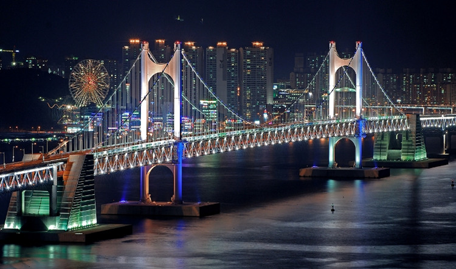
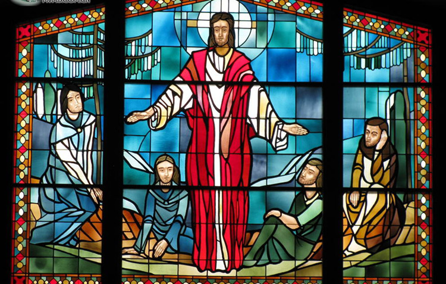

介绍
#地理位置与历史概况#
釜山（Busan），全称釜山广域市，位于韩国东南端，是韩国第一港口和第二大城市。南面日本海，与日本对马岛隔海相望，地理位置十分优越，历史上一直是东亚大陆和海洋文化交流的纽带和桥梁。

图：釜山夜景
早在15世纪早期，釜山就被朝鲜李氏王朝指定为商贸港口。1876年，釜山港即成为朝鲜半岛第一大港口。朝鲜战争时期，釜山是唯一没有被朝鲜人民军占领过的城市。1963年1月1日釜山升为广域市。截至2015年底釜山总人口达1332.11万人。
釜山工业仅次于首尔，深入纺织、机械、化工、食品、木材、水产品加工等各领域，其中机械工业尤为发达，造船、轮胎生产居韩国首位。韩国唯一的证券交易所韩国交易所（KRX）也设在釜山。釜山镇海经济自由区的建立进一步巩固了釜山地区贸易中心和金融中心的地位。
#宗教#
由于韩国享有“世界宗教博物馆”之称，宗教自由受韩国宪法保证，因此釜山有许多宗教：既有最古老的宗教，例如萨满教、佛教，也有基督教、天主教等。此外，还有一些较次要的宗教，如元佛教、大宗教。釜山有许多宗教建筑，例如韩国著名的梵鱼寺及通度寺。
儒教作为中国传统伦理道德规范传入朝鲜半岛后，广泛扎根于社会现实中，儒教在釜山有一定的文化地位，釜山目前尚存很多儒家礼仪学堂等。釜山的三光寺有许多佛教殿阁，并且拥有35万信徒，是韩国佛教中心釜山佛教的象征，还被美国CNN选为韩国必访的最美50个景点之一。

图：釜山宗教
#最佳出游日期#
釜山属于温带海洋性气候，旅游最好的季节属于春秋，此时没有夏天的潮湿多雨与酷暑，天高气爽，气候宜人，是最受欢迎的旅游季节。
3月-5月，春季时阳光普照，风和日丽，很适合旅行。 9月-11月，釜山有许多庆典活动，也是了解釜山文化的一个好契机。

图：釜山春季景观
因受海洋性气候的影响，夏天和冬天的温差较小，四季变化明显，风力比其他地方强。在查好天气情况和做好准备之外，夏冬两季也是旅行的好时机。
#特色#
釜山是韩国著名的沿海城市，海滨风光是这里主要的旅游资源之一。釜山有著名的海云台海水浴场和广安里海水浴场，海云台浴场的沙滩长达1.8km，宽50m，海水平均深度1m。在夏季迎来旅游高峰，近2km 的海滩满是遮阳伞，海水中则尽是戏水的人们。
韩国有三大名寺：海东龙宫寺、金井山梵鱼寺和通度寺。海东龙宫寺位于釜山东海岸，是韩国唯一一座位于海边的寺庙，周边景色非常优美。梵鱼寺位于釜山的名山金井山麓，是距今约1300 年前的新罗文武王18年（678 年）由义湘大师（625-702）所建。大雄殿建筑手法细腻而华丽，堪称李朝时期（1392-1910）建筑之顶峰。此外，通度寺地处庆州到釜山的途中，建于公元 646年，由从唐朝携回佛祖舍利子的慈藏法师所创建。
图：韩国寺庙建筑
札嘎其鱼市场是韩国最大的水产市场，也是釜山的代表，闻名于韩国全国。如果你喜欢吃海鲜，那么就不要错过这里。在这里，你可以品尝到韩国非常新鲜的生鱼片，而且价格更加实惠。
时差
釜山比北京时间早1个小时。比如北京市上午10点，（韩国）时间是上午11点。
公众假期及节庆
#公众假期#
| 公众假期 | 日期 |
| 元旦(新年) | 1月1日 |
| 春节 | 正月初一-初三 |
| 三一独立纪念日 | 3月1日 |
| 释迦诞生日 | 5月3日 |
| 儿童节 | 5月5日 |
| 显忠日 | 6月6日 |
| 光复节 | 8月15日 |
| 开天节 | 10月3日 |
| 中秋节 | 八月十五 |
| 韩文日 | 10月9日 |
| 圣诞节 | 12月25日 |
#釜山三乐樱花节#
日期：4月初
春天世界，樱花烂漫飞舞，前来赏花的人也络绎不绝。釜山沙上区每年都会举办樱花节，除了供游人赏樱外，还会展出三乐洞居民的作品，并设有瓷器、书法、天然香皂制作等体验活动，此外，邀请歌手前来助兴也是必不可少的亮点。
图：釜山樱花节
#广安里渔坊节#
日期：4月25日-4月27日
广安里渔坊节是以左水营渔坊游戏和水营地区的传统民俗为主题举行的釜山庆典活动。活动期间，将在广安里海水浴场、广安里大桥、广安里海边形成风格迥异的主题街区，举行赤手抓鱼、活鱼料理大赛、海上体育运动免费体验等活动，给游客提供亲近海洋，体验海洋沙滩文化的机会。
#釜山海洋节#
日期：8月1日-8月9日
釜山海洋节是为了宣传作为海洋文化城市的釜山在1996年首次召开的庆典，将釜山的海水浴场作为主要的活动场所，是能享受异国特色的体验活动和各种文化艺术活动的夏季庆典，也是韩国最早的综合观光庆典。
釜山海洋庆典以“开放的海洋，敞开的心怀，我们在一起”为主题，将进行海面舞蹈节，海上游行，演唱会，艺术表演，体育大会等各种特别活动。此外还筹备了海洋市民们参与的歌曲大赛，釜山母亲合唱祭等活动。
釜山美术双年展 日期：9月10日“釜山美术双年展”是原“釜山青年美术双年展”、“海洋美术节”、“国际露天雕刻作品发布会”统一而成的综合美术节。该美术节旨在提高韩国美术在国际上的威望，扩大美术的发展领域。 “釜山美术双年展”分为现代美术展、海洋美术展、釜山雕刻展三个板块，自2000年起开始举办，每两年举行一次。

图：釜山海洋节
#釜山烟花节#
日期：10月
釜山烟花庆典是广安里海水浴场上规模最大的庆典活动。庆典期间，将有来自全国各地的游客汇聚在这里，每年访客数量均超过百万人次。除形态各异的烟花秀外，配上美妙主题音乐的酷炫激光秀更令人心旷神怡，陶醉其中。
以广安大桥为背景舞台，数万发的绚烂烟花在夜空绽放，结合最尖端的镭射照明的音乐。在空中绽放的真正的烟花，再加上釜山的海面上倒映的烟花可以观赏到的是双倍的美丽。届时，在广安里海水浴场的特设舞台上还会上演各种精彩的文艺汇演。
图：釜山烟花节
#釜山圣诞树文化节#
日期：12 月
圣诞节是西方的传统节日，但在韩国同样受到欢迎。每年在釜山中区的光复路都会举办盛大的圣诞树文化节，中心地段会有一颗巨大的圣诞树，到了夜晚更是灯火辉煌，异常美丽。